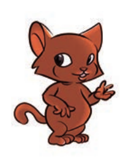
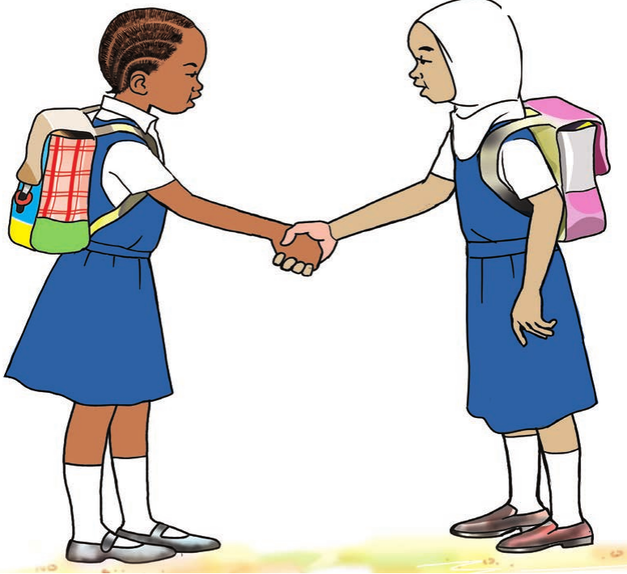

Ninaheshimu imani za watu wengine

Jina langu ni Hamisa, rafiki yangu ni Maria, sisi hucheza pamoja kila tukitoka shuleni, siku za ibada mimi huenda na wazazi wangu msikitini, Maria pia huenda na wazazi wake kanisani. Wazazi wetu wanatusisitiza sana kufanya ibada.
